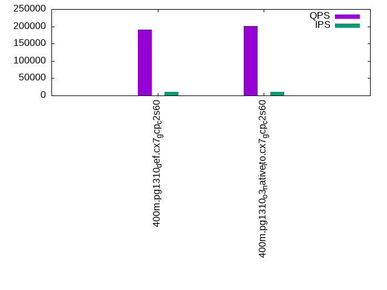

This is a report for the insert benchmark with 400M docs and 20 client(s). It is generated by scripts (bash, awk, sed) and Tufte might not be impressed. An overview of the insert benchmark is here and a short update is here. Below, by DBMS, I mean DBMS+version.config. An example is my8020.c10b40 where my means MySQL, 8020 is version 8.0.20 and c10b40 is the name for the configuration file.
The test server is a c2-standard-60 from GCP with 30 cores, hyperthreading disabled, 240G RAM and 3T from XFS and SW RAID 0 striped over 8 local NVMe drives. The benchmark was run with 20 clients and there were 1 or 2 connections per client (1 for queries, 1 for inserts). The benchmark loads 400M rows without secondary indexes, creates secondary indexes, loads another 400M rows then does 3 read+write tests for one hour each that do queries as fast as possible with 100, 500 and then 1000 writes/second/client concurrent with the queries. Each read-write test runs for 1800 seconds. The test was configured to use one table. The database is cached by the storage engine and the only IO is for writes. Clients and the DBMS share one server. The per-database configs are in the per-database subdirectories here.
The tested DBMS are:
The numbers are inserts/s for l.i0 and l.i1, indexed docs (or rows) /s for l.x and queries/s for q*.2. The values are the average rate over the entire test for inserts (IPS) and queries (QPS). The range of values for IPS and QPS is split into 3 parts: bottom 25%, middle 50%, top 25%. Values in the bottom 25% have a red background, values in the top 25% have a green background and values in the middle have no color. A gray background is used for values that can be ignored because the DBMS did not sustain the target insert rate. Red backgrounds are not used when the minimum value is within 80% of the max value.
| dbms | l.i0 | l.x | l.i1 | q100.1 | q500.1 | q1000.1 |
|---|---|---|---|---|---|---|
| 400m.pg1310_def.cx7_gcp_c2s60 | 1086956 | 335654 | 384986 | 189859 | 191269 | 196494 |
| 400m.pg1310_o3_native_lto.cx7_gcp_c2s60 | 1101928 | 338208 | 388350 | 199219 | 201186 | 205778 |
This lists the average rate of inserts/s for the tests that do inserts concurrent with queries. For such tests the query rate is listed in the table above. The read+write tests are setup so that the insert rate should match the target rate every second. Cells that are not at least 95% of the target have a red background to indicate a failure to satisfy the target.
| dbms | q100.1 | q500.1 | q1000.1 |
|---|---|---|---|
| pg1310_def.cx7_gcp_c2s60 | 1976 | 9885 | 19769 |
| pg1310_o3_native_lto.cx7_gcp_c2s60 | 1976 | 9885 | 19769 |
| target | 2000 | 10000 | 20000 |
l.i0: load without secondary indexes. Graphs for performance per 1-second interval are here.
Average throughput:
Insert response time histogram: each cell has the percentage of responses that take <= the time in the header and max is the max response time in seconds. For the max column values in the top 25% of the range have a red background and in the bottom 25% of the range have a green background. The red background is not used when the min value is within 80% of the max value.
| dbms | 256us | 1ms | 4ms | 16ms | 64ms | 256ms | 1s | 4s | 16s | gt | max |
|---|---|---|---|---|---|---|---|---|---|---|---|
| pg1310_def.cx7_gcp_c2s60 | 21.060 | 75.421 | 3.454 | 0.024 | 0.029 | 0.012 | 0.956 | ||||
| pg1310_o3_native_lto.cx7_gcp_c2s60 | 26.135 | 70.323 | 3.484 | 0.019 | 0.023 | 0.016 | nonzero | 1.290 |
Performance metrics for the DBMS listed above. Some are normalized by throughput, others are not. Legend for results is here.
ips qps rps rmbps wps wmbps rpq rkbpq wpi wkbpi csps cpups cspq cpupq dbgb1 dbgb2 rss maxop p50 p99 tag 1086956 0 0 0.0 1711.3 420.6 0.000 0.000 0.002 0.396 300202 57.9 0.276 16 43.0 115.7 NA 0.956 60834 8094 400m.pg1310_def.cx7_gcp_c2s60 1101928 0 0 0.0 1726.0 422.9 0.000 0.000 0.002 0.393 324734 57.2 0.295 16 43.0 114.9 NA 1.290 61563 8091 400m.pg1310_o3_native_lto.cx7_gcp_c2s60
l.x: create secondary indexes.
Average throughput:
Performance metrics for the DBMS listed above. Some are normalized by throughput, others are not. Legend for results is here.
ips qps rps rmbps wps wmbps rpq rkbpq wpi wkbpi csps cpups cspq cpupq dbgb1 dbgb2 rss maxop p50 p99 tag 335654 0 1103 15.2 391.1 95.2 0.003 0.046 0.001 0.291 757 3.3 0.002 3 78.3 151.6 0.0 0.019 NA NA 400m.pg1310_def.cx7_gcp_c2s60 338208 0 890 16.2 395.3 93.3 0.003 0.049 0.001 0.282 802 3.3 0.002 3 78.3 150.8 0.0 0.013 NA NA 400m.pg1310_o3_native_lto.cx7_gcp_c2s60
l.i1: continue load after secondary indexes created. Graphs for performance per 1-second interval are here.
Average throughput:
Insert response time histogram: each cell has the percentage of responses that take <= the time in the header and max is the max response time in seconds. For the max column values in the top 25% of the range have a red background and in the bottom 25% of the range have a green background. The red background is not used when the min value is within 80% of the max value.
| dbms | 256us | 1ms | 4ms | 16ms | 64ms | 256ms | 1s | 4s | 16s | gt | max |
|---|---|---|---|---|---|---|---|---|---|---|---|
| pg1310_def.cx7_gcp_c2s60 | 94.314 | 4.602 | 1.039 | 0.032 | 0.012 | nonzero | 1.016 | ||||
| pg1310_o3_native_lto.cx7_gcp_c2s60 | 94.303 | 4.575 | 1.079 | 0.027 | 0.017 | 0.775 |
Performance metrics for the DBMS listed above. Some are normalized by throughput, others are not. Legend for results is here.
ips qps rps rmbps wps wmbps rpq rkbpq wpi wkbpi csps cpups cspq cpupq dbgb1 dbgb2 rss maxop p50 p99 tag 384986 0 2978 26.8 2460.9 420.8 0.008 0.071 0.006 1.119 271361 53.1 0.705 41 170.2 312.6 NA 1.016 23684 1799 400m.pg1310_def.cx7_gcp_c2s60 388350 0 2910 27.0 2535.3 440.4 0.007 0.071 0.007 1.161 285834 52.1 0.736 40 170.2 317.5 NA 0.775 24269 1399 400m.pg1310_o3_native_lto.cx7_gcp_c2s60
q100.1: range queries with 100 insert/s per client. Graphs for performance per 1-second interval are here.
Average throughput:
Query response time histogram: each cell has the percentage of responses that take <= the time in the header and max is the max response time in seconds. For max values in the top 25% of the range have a red background and in the bottom 25% of the range have a green background. The red background is not used when the min value is within 80% of the max value.
| dbms | 256us | 1ms | 4ms | 16ms | 64ms | 256ms | 1s | 4s | 16s | gt | max |
|---|---|---|---|---|---|---|---|---|---|---|---|
| pg1310_def.cx7_gcp_c2s60 | 99.972 | 0.022 | 0.006 | 0.001 | nonzero | 0.024 | |||||
| pg1310_o3_native_lto.cx7_gcp_c2s60 | 99.977 | 0.016 | 0.006 | 0.001 | nonzero | 0.024 |
Insert response time histogram: each cell has the percentage of responses that take <= the time in the header and max is the max response time in seconds. For max values in the top 25% of the range have a red background and in the bottom 25% of the range have a green background. The red background is not used when the min value is within 80% of the max value.
| dbms | 256us | 1ms | 4ms | 16ms | 64ms | 256ms | 1s | 4s | 16s | gt | max |
|---|---|---|---|---|---|---|---|---|---|---|---|
| pg1310_def.cx7_gcp_c2s60 | 97.821 | 1.599 | 0.568 | 0.013 | 0.100 | ||||||
| pg1310_o3_native_lto.cx7_gcp_c2s60 | 97.158 | 2.371 | 0.468 | 0.003 | 0.118 |
Performance metrics for the DBMS listed above. Some are normalized by throughput, others are not. Legend for results is here.
ips qps rps rmbps wps wmbps rpq rkbpq wpi wkbpi csps cpups cspq cpupq dbgb1 dbgb2 rss maxop p50 p99 tag 1976 189859 0 0.0 2579.9 72.7 0.000 0.000 1.306 37.698 677437 62.8 3.568 99 171.1 272.0 0.0 0.024 9382 9046 400m.pg1310_def.cx7_gcp_c2s60 1976 199219 0 0.0 2578.1 72.6 0.000 0.000 1.305 37.645 709285 62.8 3.560 95 171.1 275.6 0.0 0.024 9898 9530 400m.pg1310_o3_native_lto.cx7_gcp_c2s60
q500.1: range queries with 500 insert/s per client. Graphs for performance per 1-second interval are here.
Average throughput:
Query response time histogram: each cell has the percentage of responses that take <= the time in the header and max is the max response time in seconds. For max values in the top 25% of the range have a red background and in the bottom 25% of the range have a green background. The red background is not used when the min value is within 80% of the max value.
| dbms | 256us | 1ms | 4ms | 16ms | 64ms | 256ms | 1s | 4s | 16s | gt | max |
|---|---|---|---|---|---|---|---|---|---|---|---|
| pg1310_def.cx7_gcp_c2s60 | 99.912 | 0.058 | 0.027 | 0.003 | nonzero | 0.033 | |||||
| pg1310_o3_native_lto.cx7_gcp_c2s60 | 99.920 | 0.052 | 0.026 | 0.003 | nonzero | nonzero | 0.072 |
Insert response time histogram: each cell has the percentage of responses that take <= the time in the header and max is the max response time in seconds. For max values in the top 25% of the range have a red background and in the bottom 25% of the range have a green background. The red background is not used when the min value is within 80% of the max value.
| dbms | 256us | 1ms | 4ms | 16ms | 64ms | 256ms | 1s | 4s | 16s | gt | max |
|---|---|---|---|---|---|---|---|---|---|---|---|
| pg1310_def.cx7_gcp_c2s60 | 52.667 | 27.996 | 19.036 | 0.299 | 0.002 | 0.290 | |||||
| pg1310_o3_native_lto.cx7_gcp_c2s60 | 52.274 | 28.005 | 19.395 | 0.325 | 0.166 |
Performance metrics for the DBMS listed above. Some are normalized by throughput, others are not. Legend for results is here.
ips qps rps rmbps wps wmbps rpq rkbpq wpi wkbpi csps cpups cspq cpupq dbgb1 dbgb2 rss maxop p50 p99 tag 9885 191269 0 0.0 4597.6 149.5 0.000 0.000 0.465 15.488 669164 63.9 3.499 100 176.0 242.4 0.0 0.033 9482 9078 400m.pg1310_def.cx7_gcp_c2s60 9885 201186 0 0.0 4691.4 151.6 0.000 0.000 0.475 15.703 701820 63.7 3.488 95 176.0 243.7 0.0 0.072 9989 9498 400m.pg1310_o3_native_lto.cx7_gcp_c2s60
q1000.1: range queries with 1000 insert/s per client. Graphs for performance per 1-second interval are here.
Average throughput:
Query response time histogram: each cell has the percentage of responses that take <= the time in the header and max is the max response time in seconds. For max values in the top 25% of the range have a red background and in the bottom 25% of the range have a green background. The red background is not used when the min value is within 80% of the max value.
| dbms | 256us | 1ms | 4ms | 16ms | 64ms | 256ms | 1s | 4s | 16s | gt | max |
|---|---|---|---|---|---|---|---|---|---|---|---|
| pg1310_def.cx7_gcp_c2s60 | 99.862 | 0.096 | 0.037 | 0.004 | nonzero | 0.042 | |||||
| pg1310_o3_native_lto.cx7_gcp_c2s60 | 99.871 | 0.089 | 0.036 | 0.004 | nonzero | 0.053 |
Insert response time histogram: each cell has the percentage of responses that take <= the time in the header and max is the max response time in seconds. For max values in the top 25% of the range have a red background and in the bottom 25% of the range have a green background. The red background is not used when the min value is within 80% of the max value.
| dbms | 256us | 1ms | 4ms | 16ms | 64ms | 256ms | 1s | 4s | 16s | gt | max |
|---|---|---|---|---|---|---|---|---|---|---|---|
| pg1310_def.cx7_gcp_c2s60 | 61.718 | 25.673 | 12.288 | 0.321 | 0.217 | ||||||
| pg1310_o3_native_lto.cx7_gcp_c2s60 | 62.085 | 25.567 | 12.043 | 0.304 | 0.221 |
Performance metrics for the DBMS listed above. Some are normalized by throughput, others are not. Legend for results is here.
ips qps rps rmbps wps wmbps rpq rkbpq wpi wkbpi csps cpups cspq cpupq dbgb1 dbgb2 rss maxop p50 p99 tag 19769 196494 0 0.0 4433.1 213.5 0.000 0.000 0.224 11.057 661228 65.4 3.365 100 189.4 252.0 0.0 0.042 9749 9110 400m.pg1310_def.cx7_gcp_c2s60 19769 205778 0 0.0 4370.8 209.3 0.000 0.000 0.221 10.839 692687 65.3 3.366 95 189.4 252.7 0.0 0.053 10168 9513 400m.pg1310_o3_native_lto.cx7_gcp_c2s60
l.i0: load without secondary indexes
Performance metrics for all DBMS, not just the ones listed above. Some are normalized by throughput, others are not. Legend for results is here.
ips qps rps rmbps wps wmbps rpq rkbpq wpi wkbpi csps cpups cspq cpupq dbgb1 dbgb2 rss maxop p50 p99 tag 1086956 0 0 0.0 1711.3 420.6 0.000 0.000 0.002 0.396 300202 57.9 0.276 16 43.0 115.7 NA 0.956 60834 8094 400m.pg1310_def.cx7_gcp_c2s60 1101928 0 0 0.0 1726.0 422.9 0.000 0.000 0.002 0.393 324734 57.2 0.295 16 43.0 114.9 NA 1.290 61563 8091 400m.pg1310_o3_native_lto.cx7_gcp_c2s60
l.x: create secondary indexes
Performance metrics for all DBMS, not just the ones listed above. Some are normalized by throughput, others are not. Legend for results is here.
ips qps rps rmbps wps wmbps rpq rkbpq wpi wkbpi csps cpups cspq cpupq dbgb1 dbgb2 rss maxop p50 p99 tag 335654 0 1103 15.2 391.1 95.2 0.003 0.046 0.001 0.291 757 3.3 0.002 3 78.3 151.6 0.0 0.019 NA NA 400m.pg1310_def.cx7_gcp_c2s60 338208 0 890 16.2 395.3 93.3 0.003 0.049 0.001 0.282 802 3.3 0.002 3 78.3 150.8 0.0 0.013 NA NA 400m.pg1310_o3_native_lto.cx7_gcp_c2s60
l.i1: continue load after secondary indexes created
Performance metrics for all DBMS, not just the ones listed above. Some are normalized by throughput, others are not. Legend for results is here.
ips qps rps rmbps wps wmbps rpq rkbpq wpi wkbpi csps cpups cspq cpupq dbgb1 dbgb2 rss maxop p50 p99 tag 384986 0 2978 26.8 2460.9 420.8 0.008 0.071 0.006 1.119 271361 53.1 0.705 41 170.2 312.6 NA 1.016 23684 1799 400m.pg1310_def.cx7_gcp_c2s60 388350 0 2910 27.0 2535.3 440.4 0.007 0.071 0.007 1.161 285834 52.1 0.736 40 170.2 317.5 NA 0.775 24269 1399 400m.pg1310_o3_native_lto.cx7_gcp_c2s60
q100.1: range queries with 100 insert/s per client
Performance metrics for all DBMS, not just the ones listed above. Some are normalized by throughput, others are not. Legend for results is here.
ips qps rps rmbps wps wmbps rpq rkbpq wpi wkbpi csps cpups cspq cpupq dbgb1 dbgb2 rss maxop p50 p99 tag 1976 189859 0 0.0 2579.9 72.7 0.000 0.000 1.306 37.698 677437 62.8 3.568 99 171.1 272.0 0.0 0.024 9382 9046 400m.pg1310_def.cx7_gcp_c2s60 1976 199219 0 0.0 2578.1 72.6 0.000 0.000 1.305 37.645 709285 62.8 3.560 95 171.1 275.6 0.0 0.024 9898 9530 400m.pg1310_o3_native_lto.cx7_gcp_c2s60
q500.1: range queries with 500 insert/s per client
Performance metrics for all DBMS, not just the ones listed above. Some are normalized by throughput, others are not. Legend for results is here.
ips qps rps rmbps wps wmbps rpq rkbpq wpi wkbpi csps cpups cspq cpupq dbgb1 dbgb2 rss maxop p50 p99 tag 9885 191269 0 0.0 4597.6 149.5 0.000 0.000 0.465 15.488 669164 63.9 3.499 100 176.0 242.4 0.0 0.033 9482 9078 400m.pg1310_def.cx7_gcp_c2s60 9885 201186 0 0.0 4691.4 151.6 0.000 0.000 0.475 15.703 701820 63.7 3.488 95 176.0 243.7 0.0 0.072 9989 9498 400m.pg1310_o3_native_lto.cx7_gcp_c2s60
q1000.1: range queries with 1000 insert/s per client
Performance metrics for all DBMS, not just the ones listed above. Some are normalized by throughput, others are not. Legend for results is here.
ips qps rps rmbps wps wmbps rpq rkbpq wpi wkbpi csps cpups cspq cpupq dbgb1 dbgb2 rss maxop p50 p99 tag 19769 196494 0 0.0 4433.1 213.5 0.000 0.000 0.224 11.057 661228 65.4 3.365 100 189.4 252.0 0.0 0.042 9749 9110 400m.pg1310_def.cx7_gcp_c2s60 19769 205778 0 0.0 4370.8 209.3 0.000 0.000 0.221 10.839 692687 65.3 3.366 95 189.4 252.7 0.0 0.053 10168 9513 400m.pg1310_o3_native_lto.cx7_gcp_c2s60
Insert response time histogram
256us 1ms 4ms 16ms 64ms 256ms 1s 4s 16s gt max tag 0.000 21.060 75.421 3.454 0.024 0.029 0.012 0.000 0.000 0.000 0.956 pg1310_def.cx7_gcp_c2s60 0.000 26.135 70.323 3.484 0.019 0.023 0.016 nonzero 0.000 0.000 1.290 pg1310_o3_native_lto.cx7_gcp_c2s60
TODO - determine whether there is data for create index response time
Insert response time histogram
256us 1ms 4ms 16ms 64ms 256ms 1s 4s 16s gt max tag 0.000 0.000 94.314 4.602 1.039 0.032 0.012 nonzero 0.000 0.000 1.016 pg1310_def.cx7_gcp_c2s60 0.000 0.000 94.303 4.575 1.079 0.027 0.017 0.000 0.000 0.000 0.775 pg1310_o3_native_lto.cx7_gcp_c2s60
Query response time histogram
256us 1ms 4ms 16ms 64ms 256ms 1s 4s 16s gt max tag 99.972 0.022 0.006 0.001 nonzero 0.000 0.000 0.000 0.000 0.000 0.024 pg1310_def.cx7_gcp_c2s60 99.977 0.016 0.006 0.001 nonzero 0.000 0.000 0.000 0.000 0.000 0.024 pg1310_o3_native_lto.cx7_gcp_c2s60
Insert response time histogram
256us 1ms 4ms 16ms 64ms 256ms 1s 4s 16s gt max tag 0.000 0.000 97.821 1.599 0.568 0.013 0.000 0.000 0.000 0.000 0.100 pg1310_def.cx7_gcp_c2s60 0.000 0.000 97.158 2.371 0.468 0.003 0.000 0.000 0.000 0.000 0.118 pg1310_o3_native_lto.cx7_gcp_c2s60
Query response time histogram
256us 1ms 4ms 16ms 64ms 256ms 1s 4s 16s gt max tag 99.912 0.058 0.027 0.003 nonzero 0.000 0.000 0.000 0.000 0.000 0.033 pg1310_def.cx7_gcp_c2s60 99.920 0.052 0.026 0.003 nonzero nonzero 0.000 0.000 0.000 0.000 0.072 pg1310_o3_native_lto.cx7_gcp_c2s60
Insert response time histogram
256us 1ms 4ms 16ms 64ms 256ms 1s 4s 16s gt max tag 0.000 0.000 52.667 27.996 19.036 0.299 0.002 0.000 0.000 0.000 0.290 pg1310_def.cx7_gcp_c2s60 0.000 0.000 52.274 28.005 19.395 0.325 0.000 0.000 0.000 0.000 0.166 pg1310_o3_native_lto.cx7_gcp_c2s60
Query response time histogram
256us 1ms 4ms 16ms 64ms 256ms 1s 4s 16s gt max tag 99.862 0.096 0.037 0.004 nonzero 0.000 0.000 0.000 0.000 0.000 0.042 pg1310_def.cx7_gcp_c2s60 99.871 0.089 0.036 0.004 nonzero 0.000 0.000 0.000 0.000 0.000 0.053 pg1310_o3_native_lto.cx7_gcp_c2s60
Insert response time histogram
256us 1ms 4ms 16ms 64ms 256ms 1s 4s 16s gt max tag 0.000 0.000 61.718 25.673 12.288 0.321 0.000 0.000 0.000 0.000 0.217 pg1310_def.cx7_gcp_c2s60 0.000 0.000 62.085 25.567 12.043 0.304 0.000 0.000 0.000 0.000 0.221 pg1310_o3_native_lto.cx7_gcp_c2s60